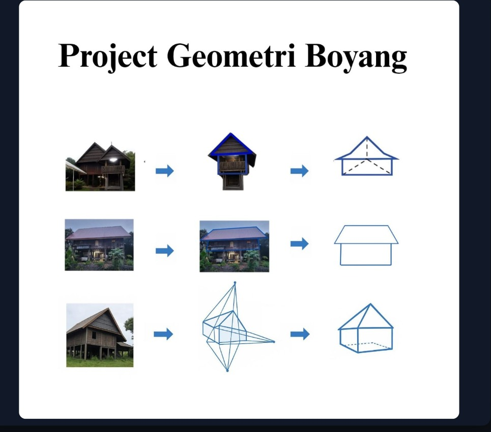

Pada baris pertama, tampak depan atap (Tumbaq Layar) diabstraksikan menjadi bangun datar Segitiga Sama Kaki. Garis putus-putus vertikal di tengah menunjukkan Sumbu Simetri, yang menegaskan prinsip keseimbangan struktur.
Pada baris kedua, fokus diarahkan pada badan rumah (area hunian) yang diproyeksikan menjadi bangun ruang Balok (Prisma Segi Empat). Garis merah mempertegas batas volume ruang yang dihuni.
Pada baris ketiga, satu sisi bidang atap yang miring diproyeksikan menjadi bangun datar Persegi Panjang. Dua garis putus-putus yang bersilangan adalah Diagonal Bidang untuk menentukan titik pusat berat.